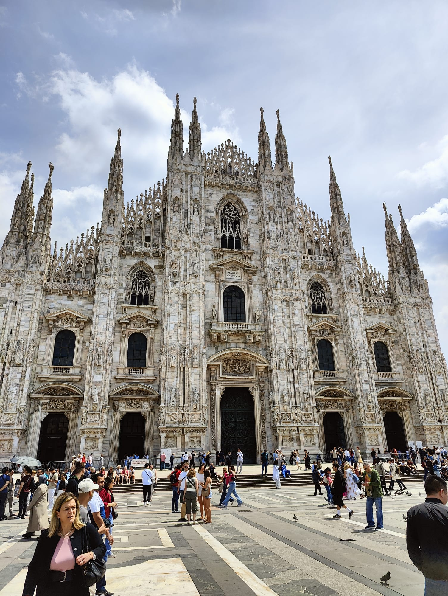

Insights from the Common Europe conference – Day 1
The first day only started in the afternoon, so I had some time to explore the city. I went to Milan city were I visited the famous church Duomo di Milano. The church is the largest in Italy and the third largest in the world. The church is located in the city center and is a must-see when you are in Milan. The church is made of white marble and has a lot of statues on the outside. The inside of the church is also very beautiful with a lot of paintings and sculptures. After visiting the church I went to the Galleria Vittorio Emanuele II. This is a shopping mall with a lot of luxury shops. The shopping mall is located next to the church and is also a must-see when you are in Milan. The shopping mall is very beautiful with a lot of glass and iron. After visiting the shopping mall I went to the Sforza Castle. This is a castle that was built in the 15th century and is now a museum. The castle is located in a park and is also a must-see when you are in Milan. The castle is very beautiful with a lot of towers and walls. After visiting the castle I went back to the hotel to get ready for the conference.
